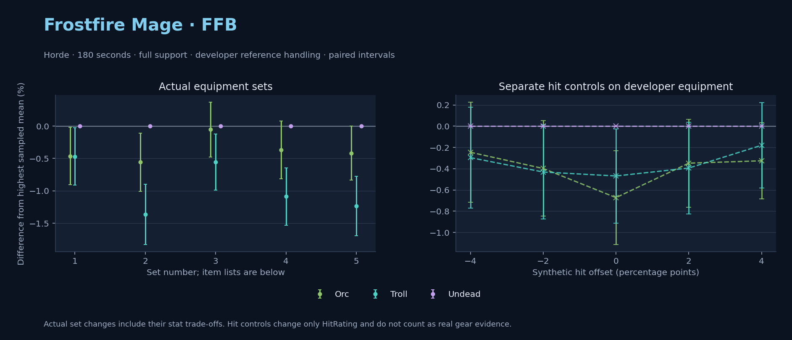

Horde · Orc / Troll / Undead

No pet or guardian appears in the reference combat metrics. Reference: Orc, developer equipment, 180 seconds and full support. Pet choices remain those of the developer build.
WoWSims developer · P1 Arcane
Unimplemented enchant or active set effects: [{"id": 181, "pieces": 2, "effects": ["+8 All Resistances."]}, {"id": 181, "pieces": 4, "effects": ["When struck in combat has a 2% chance of freezing the attacker in place for 3s. Can only occur once every 60 sec."]}]
180 seconds, full support and original developer references. Hit below is generic sheet melee / spell hit; school and talent bonuses can be attached directly to spells.
| Race | DPS | Gap and interval | Generic hit | Replay |
|---|---|---|---|---|
| Undead | 776.66 | +0.000% ± 0.000 | 2.9% / 2.9% | Native input · Website JSON |
| Orc | 773.06 | -0.463% ± 0.443 | 2.9% / 2.9% | Native input · Website JSON |
| Troll | 773.02 | -0.468% ± 0.443 | 2.9% / 2.9% | Native input · Website JSON |
| Slot | Item | ID | Enchant |
|---|---|---|---|
| Head | Magister's Crown | 16686 | |
| Neck | Gem of Trapped Innocents | 23057 | |
| Shoulder | Sorcerer's Mantle | 226936 | |
| Back | Drape of Vaulted Secrets | 21415 | |
| Chest | Magister's Robes | 16688 | |
| Wrist | Magister's Bindings | 16683 | |
| Hands | Magister's Gloves | 16684 | |
| Waist | Magister's Belt | 16685 | |
| Legs | Magister's Leggings | 16687 | |
| Feet | Magister's Boots | 16682 | |
| Ring 1 | Brilliant Watcher's Signet | 275982 | |
| Ring 2 | Ring of Entropy | 18543 | |
| Trinket 1 | Talisman of Ephemeral Power | 18820 | |
| Trinket 2 | Neltharion's Tear | 19379 | |
| Main hand | Grand Marshal's Mageblade | 23451 | |
| Off hand | Master Dragonslayer's Orb | 19366 | |
| Ranged / relic | Torch of Light | 279246 |
Published ranked alternatives · Published pre-raid
Recorded source replacements: [{"slot": "ranged", "from": 11748, "to": 7513, "publishedAlternativeRank": 1, "publishedEpDelta": -3.6, "reason": "First published alternative compatible with the current WoWSims database, class, faction and occupied slots."}]
180 seconds, full support and original developer references. Hit below is generic sheet melee / spell hit; school and talent bonuses can be attached directly to spells.
| Race | DPS | Gap and interval | Generic hit | Replay |
|---|---|---|---|---|
| Undead | 812.16 | +0.000% ± 0.000 | 3.7% / 3.7% | Native input · Website JSON |
| Orc | 807.63 | -0.557% ± 0.451 | 3.7% / 3.7% | Native input · Website JSON |
| Troll | 801.08 | -1.365% ± 0.464 | 3.7% / 3.7% | Native input · Website JSON |
| Slot | Item | ID | Enchant |
|---|---|---|---|
| Head | Sorcerer's Crown | 226935 | Arcanum of Focus |
| Neck | Archlight Talisman | 15856 | Enchant Necklace - Spell Power |
| Shoulder | Mantle of the Timbermaw | 19050 | |
| Back | Arcanoweave Cloak | 272411 | |
| Chest | Sorcerer's Robes | 226932 | Mystic Rugged Armor Kit |
| Wrist | Runecloth Cuffs | 254123 | Enchant Bracer - Greater Spellpower |
| Hands | Gloves of Spell Mastery | 14146 | Enchant Gloves - Minor Haste |
| Waist | Belt of the Archmage | 18405 | |
| Legs | Cindercloth Pants | 14045 | Arcanum of Focus |
| Feet | Sorcerer's Sandals | 226931 | Mystic Rugged Armor Kit |
| Ring 1 | Blessed Band of Light | 272407 | |
| Ring 2 | Maiden's Circle | 13001 | |
| Trinket 1 | Weakness Analyzer | 272438 | |
| Trinket 2 | Rune of the Guard Captain | 19120 | |
| Main hand | Sageblade | 22383 | |
| Off hand | Spirit of Aquementas | 11904 | Enchant Off-Hand - Superior Intellect |
| Ranged / relic | Ragefire Wand | 7513 |
Published one-slot hit alternative · Published pre-raid
One source-listed alternative; at least 80% of the source slot score retained. Reported hit selects the contrast; only native stats determine simulation outcomes. This is an experimental combination, not an endorsed best set.
Recorded source replacements: [{"slot": "ranged", "from": 11748, "to": 7513, "publishedAlternativeRank": 1, "publishedEpDelta": -3.6, "reason": "First published alternative compatible with the current WoWSims database, class, faction and occupied slots."}]
180 seconds, full support and original developer references. Hit below is generic sheet melee / spell hit; school and talent bonuses can be attached directly to spells.
| Race | DPS | Gap and interval | Generic hit | Replay |
|---|---|---|---|---|
| Undead | 810.41 | +0.000% ± 0.000 | 4.7% / 4.7% | Native input · Website JSON |
| Orc | 809.97 | -0.054% ± 0.421 | 4.7% / 4.7% | Native input · Website JSON |
| Troll | 805.91 | -0.555% ± 0.431 | 4.7% / 4.7% | Native input · Website JSON |
| Slot | Item | ID | Enchant |
|---|---|---|---|
| Head | Sorcerer's Crown | 226935 | Arcanum of Focus |
| Neck | Archlight Talisman | 15856 | Enchant Necklace - Spell Power |
| Shoulder | Mantle of the Timbermaw | 19050 | |
| Back | Arcanoweave Cloak | 272411 | |
| Chest | Sorcerer's Robes | 226932 | Mystic Rugged Armor Kit |
| Wrist | Runecloth Cuffs | 254123 | Enchant Bracer - Greater Spellpower |
| Hands | Gloves of Spell Mastery | 14146 | Enchant Gloves - Minor Haste |
| Waist | Belt of the Archmage | 18405 | |
| Legs | Cindercloth Pants | 14045 | Arcanum of Focus |
| Feet | Sorcerer's Sandals | 226931 | Mystic Rugged Armor Kit |
| Ring 1 | Blessed Band of Light | 272407 | |
| Ring 2 | Channeler's Ring | 272406 | |
| Trinket 1 | Weakness Analyzer | 272438 | |
| Trinket 2 | Rune of the Guard Captain | 19120 | |
| Main hand | Sageblade | 22383 | |
| Off hand | Spirit of Aquementas | 11904 | Enchant Off-Hand - Superior Intellect |
| Ranged / relic | Ragefire Wand | 7513 |
Published ranked alternatives · Published pre-raid
Recorded source replacements: [{"slot": "shoulder", "from": 227808, "to": 19050, "publishedAlternativeRank": 1, "publishedEpDelta": -10.4, "reason": "First published alternative compatible with the current WoWSims database, class, faction and occupied slots."}, {"slot": "waist", "from": 228190, "to": 18405, "publishedAlternativeRank": 1, "publishedEpDelta": -9.2, "reason": "First published alternative compatible with the current WoWSims database, class, faction and occupied slots."}, {"slot": "ranged", "from": 11748, "to": 249385, "publishedAlternativeRank": 1, "publishedEpDelta": -2.8, "reason": "First published alternative compatible with the current WoWSims database, class, faction and occupied slots."}]
180 seconds, full support and original developer references. Hit below is generic sheet melee / spell hit; school and talent bonuses can be attached directly to spells.
| Race | DPS | Gap and interval | Generic hit | Replay |
|---|---|---|---|---|
| Undead | 830.86 | +0.000% ± 0.000 | 3.9% / 3.9% | Native input · Website JSON |
| Orc | 827.82 | -0.366% ± 0.446 | 3.9% / 3.9% | Native input · Website JSON |
| Troll | 821.82 | -1.088% ± 0.442 | 3.9% / 3.9% | Native input · Website JSON |
| Slot | Item | ID | Enchant |
|---|---|---|---|
| Head | Sorcerer's Crown | 226935 | Arcanum of Focus |
| Neck | Archlight Talisman | 15856 | Enchant Necklace - Spell Power |
| Shoulder | Mantle of the Timbermaw | 19050 | |
| Back | Arcanoweave Cloak | 272411 | |
| Chest | Robe of the Archmage | 14152 | Mystic Rugged Armor Kit |
| Wrist | Netherflame Cuffs | 254065 | Enchant Bracer - Greater Spellpower |
| Hands | Gloves of Spell Mastery | 14146 | Enchant Gloves - Minor Haste |
| Waist | Belt of the Archmage | 18405 | |
| Legs | Cindercloth Pants | 14045 | Arcanum of Focus |
| Feet | Sorcerer's Sandals | 226931 | Mystic Rugged Armor Kit |
| Ring 1 | Blessed Band of Light | 272407 | |
| Ring 2 | Maiden's Circle | 13001 | |
| Trinket 1 | Weakness Analyzer | 272438 | |
| Trinket 2 | Frozen Heart of the Mountain | 249469 | |
| Main hand | Sageblade | 22383 | |
| Off hand | Spirit of Aquementas | 11904 | Enchant Off-Hand - Superior Intellect |
| Ranged / relic | Brilliant Wand | 249385 |
Published one-slot hit alternative · Published pre-raid
One source-listed alternative; at least 80% of the source slot score retained. Reported hit selects the contrast; only native stats determine simulation outcomes. This is an experimental combination, not an endorsed best set.
Recorded source replacements: [{"slot": "shoulder", "from": 227808, "to": 19050, "publishedAlternativeRank": 1, "publishedEpDelta": -10.4, "reason": "First published alternative compatible with the current WoWSims database, class, faction and occupied slots."}, {"slot": "waist", "from": 228190, "to": 18405, "publishedAlternativeRank": 1, "publishedEpDelta": -9.2, "reason": "First published alternative compatible with the current WoWSims database, class, faction and occupied slots."}, {"slot": "ranged", "from": 11748, "to": 249385, "publishedAlternativeRank": 1, "publishedEpDelta": -2.8, "reason": "First published alternative compatible with the current WoWSims database, class, faction and occupied slots."}]
180 seconds, full support and original developer references. Hit below is generic sheet melee / spell hit; school and talent bonuses can be attached directly to spells.
| Race | DPS | Gap and interval | Generic hit | Replay |
|---|---|---|---|---|
| Undead | 834.41 | +0.000% ± 0.000 | 4.9% / 4.9% | Native input · Website JSON |
| Orc | 830.94 | -0.416% ± 0.417 | 4.9% / 4.9% | Native input · Website JSON |
| Troll | 824.11 | -1.235% ± 0.457 | 4.9% / 4.9% | Native input · Website JSON |
| Slot | Item | ID | Enchant |
|---|---|---|---|
| Head | Sorcerer's Crown | 226935 | Arcanum of Focus |
| Neck | Archlight Talisman | 15856 | Enchant Necklace - Spell Power |
| Shoulder | Mantle of the Timbermaw | 19050 | |
| Back | Arcanoweave Cloak | 272411 | |
| Chest | Robe of the Archmage | 14152 | Mystic Rugged Armor Kit |
| Wrist | Netherflame Cuffs | 254065 | Enchant Bracer - Greater Spellpower |
| Hands | Gloves of Spell Mastery | 14146 | Enchant Gloves - Minor Haste |
| Waist | Belt of the Archmage | 18405 | |
| Legs | Cindercloth Pants | 14045 | Arcanum of Focus |
| Feet | Sorcerer's Sandals | 226931 | Mystic Rugged Armor Kit |
| Ring 1 | Blessed Band of Light | 272407 | |
| Ring 2 | Channeler's Ring | 272406 | |
| Trinket 1 | Weakness Analyzer | 272438 | |
| Trinket 2 | Frozen Heart of the Mountain | 249469 | |
| Main hand | Sageblade | 22383 | |
| Off hand | Spirit of Aquementas | 11904 | Enchant Off-Hand - Superior Intellect |
| Ranged / relic | Brilliant Wand | 249385 |
The same declared pool is available to every race. Each race keeps its best validation-sample set with its screening-selected racial policy. Separate samples confirm that choice, with fresh precision samples near the practical-loss boundary. Gaps use the highest sampled mean under that same duration, support and reference treatment as their reference. A zero reference gap does not certify a race; the main matrix also allows uncertainty in the leader.
| Pool | Seconds | Support | References | Race | DPS | Gap and interval | Racial policies / mana | Selected set | Generic hit: melee / spell | Replay |
|---|---|---|---|---|---|---|---|---|---|---|
| published-pre-raid | 60 | full | developer | Troll | 873.08 | +0.000% ± 0.0005,000 iterations | developer / developer / developerMana waits 0.0s | published-mage-frostfire-horde-5625f0d7a337fa39-higher-hit | 4.9% / 4.9% | Input · Result · Stats |
| published-pre-raid | 60 | full | developer | Orc | 864.17 | -1.020% ± 0.2435,000 iterations | developer / developer / developerMana waits 0.0s | published-mage-frostfire-horde-5625f0d7a337fa39-higher-hit | 4.9% / 4.9% | Input · Result · Stats |
| published-pre-raid | 60 | full | developer | Undead | 862.28 | -1.237% ± 0.2935,000 iterations | developer / developer / developerMana waits 0.0s | published-mage-frostfire-horde-5625f0d7a337fa39 | 3.9% / 3.9% | Input · Result · Stats |
| published-pre-raid | 60 | full | explicit | Troll | 873.08 | +0.000% ± 0.0005,000 iterations | developer / developer / developerMana waits 0.0s | published-mage-frostfire-horde-5625f0d7a337fa39-higher-hit | 4.9% / 4.9% | Input · Result · Stats |
| published-pre-raid | 60 | full | explicit | Orc | 864.17 | -1.020% ± 0.2435,000 iterations | developer / developer / developerMana waits 0.0s | published-mage-frostfire-horde-5625f0d7a337fa39-higher-hit | 4.9% / 4.9% | Input · Result · Stats |
| published-pre-raid | 60 | full | explicit | Undead | 862.28 | -1.237% ± 0.2935,000 iterations | developer / developer / developerMana waits 0.0s | published-mage-frostfire-horde-5625f0d7a337fa39 | 3.9% / 3.9% | Input · Result · Stats |
| published-pre-raid | 60 | self | developer | Troll | 760.57 | +0.000% ± 0.0005,000 iterations | developer / developer / developerMana waits 0.0s | published-mage-frostfire-horde-5625f0d7a337fa39-higher-hit | 4.9% / 4.9% | Input · Result · Stats |
| published-pre-raid | 60 | self | developer | Orc | 755.03 | -0.728% ± 0.2455,000 iterations | developer / developer / developerMana waits 0.0s | published-mage-frostfire-horde-5625f0d7a337fa39-higher-hit | 4.9% / 4.9% | Input · Result · Stats |
| published-pre-raid | 60 | self | developer | Undead | 751.09 | -1.246% ± 0.3005,000 iterations | developer / developer / developerMana waits 0.0s | published-mage-frostfire-horde-5625f0d7a337fa39 | 3.9% / 3.9% | Input · Result · Stats |
| published-pre-raid | 60 | self | explicit | Troll | 760.57 | +0.000% ± 0.0005,000 iterations | developer / developer / developerMana waits 0.0s | published-mage-frostfire-horde-5625f0d7a337fa39-higher-hit | 4.9% / 4.9% | Input · Result · Stats |
| published-pre-raid | 60 | self | explicit | Orc | 755.03 | -0.728% ± 0.2455,000 iterations | developer / developer / developerMana waits 0.0s | published-mage-frostfire-horde-5625f0d7a337fa39-higher-hit | 4.9% / 4.9% | Input · Result · Stats |
| published-pre-raid | 60 | self | explicit | Undead | 751.09 | -1.246% ± 0.3005,000 iterations | developer / developer / developerMana waits 0.0s | published-mage-frostfire-horde-5625f0d7a337fa39 | 3.9% / 3.9% | Input · Result · Stats |
| published-pre-raid | 180 | full | developer | Undead | 829.91 | +0.000% ± 0.00020,000 iterations | developer / developer / developerMana waits 2.8s | published-mage-frostfire-horde-5625f0d7a337fa39-higher-hit | 4.9% / 4.9% | Input · Result · Stats · Website JSON |
| published-pre-raid | 180 | full | developer | Orc | 828.58 | -0.160% ± 0.09220,000 iterations | developer / developer / developerMana waits 3.2s | published-mage-frostfire-horde-5625f0d7a337fa39-higher-hit | 4.9% / 4.9% | Input · Result · Stats · Website JSON |
| published-pre-raid | 180 | full | developer | Troll | 823.39 | -0.786% ± 0.09620,000 iterations | oncd / developer / developerMana waits 4.8s | published-mage-frostfire-horde-5625f0d7a337fa39-higher-hit | 4.9% / 4.9% | Input · Result · Stats · Website JSON |
| published-pre-raid | 180 | full | explicit | Undead | 829.91 | +0.000% ± 0.00020,000 iterations | developer / developer / developerMana waits 2.8s | published-mage-frostfire-horde-5625f0d7a337fa39-higher-hit | 4.9% / 4.9% | Input · Result · Stats |
| published-pre-raid | 180 | full | explicit | Orc | 828.58 | -0.160% ± 0.09220,000 iterations | developer / developer / developerMana waits 3.2s | published-mage-frostfire-horde-5625f0d7a337fa39-higher-hit | 4.9% / 4.9% | Input · Result · Stats |
| published-pre-raid | 180 | full | explicit | Troll | 823.39 | -0.786% ± 0.09620,000 iterations | oncd / developer / developerMana waits 4.8s | published-mage-frostfire-horde-5625f0d7a337fa39-higher-hit | 4.9% / 4.9% | Input · Result · Stats |
| published-pre-raid | 180 | self | developer | Undead | 522.85 | +0.000% ± 0.00020,000 iterations | developer / developer / developerMana waits 54.1s | published-mage-frostfire-horde-5625f0d7a337fa39-higher-hit | 4.9% / 4.9% | Input · Result · Stats |
| published-pre-raid | 180 | self | developer | Orc | 521.28 | -0.301% ± 0.11620,000 iterations | developer / developer / developerMana waits 54.4s | published-mage-frostfire-horde-5625f0d7a337fa39-higher-hit | 4.9% / 4.9% | Input · Result · Stats |
| published-pre-raid | 180 | self | developer | Troll | 515.25 | -1.454% ± 0.12120,000 iterations | developer / developer / developerMana waits 55.7s | published-mage-frostfire-horde-5625f0d7a337fa39-higher-hit | 4.9% / 4.9% | Input · Result · Stats |
| published-pre-raid | 180 | self | explicit | Undead | 522.85 | +0.000% ± 0.00020,000 iterations | developer / developer / developerMana waits 54.1s | published-mage-frostfire-horde-5625f0d7a337fa39-higher-hit | 4.9% / 4.9% | Input · Result · Stats |
| published-pre-raid | 180 | self | explicit | Orc | 521.28 | -0.301% ± 0.11620,000 iterations | developer / developer / developerMana waits 54.4s | published-mage-frostfire-horde-5625f0d7a337fa39-higher-hit | 4.9% / 4.9% | Input · Result · Stats |
| published-pre-raid | 180 | self | explicit | Troll | 515.25 | -1.454% ± 0.12120,000 iterations | developer / developer / developerMana waits 55.7s | published-mage-frostfire-horde-5625f0d7a337fa39-higher-hit | 4.9% / 4.9% | Input · Result · Stats |
| published-pre-raid | 300 | full | developer | Undead | 658.77 | +0.000% ± 0.0005,000 iterations | developer / developer / developerMana waits 92.1s | published-mage-frostfire-horde-5625f0d7a337fa39-higher-hit | 4.9% / 4.9% | Input · Result · Stats |
| published-pre-raid | 300 | full | developer | Orc | 656.00 | -0.421% ± 0.1745,000 iterations | developer / developer / developerMana waits 92.7s | published-mage-frostfire-horde-5625f0d7a337fa39-higher-hit | 4.9% / 4.9% | Input · Result · Stats |
| published-pre-raid | 300 | full | developer | Troll | 650.46 | -1.262% ± 0.1805,000 iterations | developer / developer / developerMana waits 95.0s | published-mage-frostfire-horde-5625f0d7a337fa39-higher-hit | 4.9% / 4.9% | Input · Result · Stats |
| published-pre-raid | 300 | full | explicit | Undead | 658.77 | +0.000% ± 0.0005,000 iterations | developer / developer / developerMana waits 92.1s | published-mage-frostfire-horde-5625f0d7a337fa39-higher-hit | 4.9% / 4.9% | Input · Result · Stats |
| published-pre-raid | 300 | full | explicit | Orc | 656.00 | -0.421% ± 0.1745,000 iterations | developer / developer / developerMana waits 92.7s | published-mage-frostfire-horde-5625f0d7a337fa39-higher-hit | 4.9% / 4.9% | Input · Result · Stats |
| published-pre-raid | 300 | full | explicit | Troll | 650.46 | -1.262% ± 0.1805,000 iterations | developer / developer / developerMana waits 95.0s | published-mage-frostfire-horde-5625f0d7a337fa39-higher-hit | 4.9% / 4.9% | Input · Result · Stats |
| published-pre-raid | 300 | self | developer | Undead | 397.76 | +0.000% ± 0.00020,000 iterations | developer / developer / developerMana waits 149.2s | published-mage-frostfire-horde-5625f0d7a337fa39-higher-hit | 4.9% / 4.9% | Input · Result · Stats |
| published-pre-raid | 300 | self | developer | Orc | 396.16 | -0.402% ± 0.11620,000 iterations | developer / developer / developerMana waits 149.4s | published-mage-frostfire-horde-5625f0d7a337fa39-higher-hit | 4.9% / 4.9% | Input · Result · Stats |
| published-pre-raid | 300 | self | developer | Troll | 391.19 | -1.651% ± 0.11920,000 iterations | developer / developer / developerMana waits 150.0s | published-mage-frostfire-horde-5625f0d7a337fa39-higher-hit | 4.9% / 4.9% | Input · Result · Stats |
| published-pre-raid | 300 | self | explicit | Undead | 397.76 | +0.000% ± 0.00020,000 iterations | developer / developer / developerMana waits 149.2s | published-mage-frostfire-horde-5625f0d7a337fa39-higher-hit | 4.9% / 4.9% | Input · Result · Stats |
| published-pre-raid | 300 | self | explicit | Orc | 396.16 | -0.402% ± 0.11620,000 iterations | developer / developer / developerMana waits 149.4s | published-mage-frostfire-horde-5625f0d7a337fa39-higher-hit | 4.9% / 4.9% | Input · Result · Stats |
| published-pre-raid | 300 | self | explicit | Troll | 391.19 | -1.651% ± 0.11920,000 iterations | developer / developer / developerMana waits 150.0s | published-mage-frostfire-horde-5625f0d7a337fa39-higher-hit | 4.9% / 4.9% | Input · Result · Stats |
| developer-reference | 60 | full | developer | Troll | 813.58 | +0.000% ± 0.0005,000 iterations | oncd / developer / developerMana waits 0.0s | developer | 2.9% / 2.9% | Input · Result · Stats |
| developer-reference | 60 | full | developer | Orc | 803.39 | -1.252% ± 0.2325,000 iterations | developer / developer / developerMana waits 0.0s | developer | 2.9% / 2.9% | Input · Result · Stats |
| developer-reference | 60 | full | developer | Undead | 798.08 | -1.904% ± 0.2865,000 iterations | developer / developer / developerMana waits 0.0s | developer | 2.9% / 2.9% | Input · Result · Stats |
| developer-reference | 60 | full | explicit | Troll | 813.58 | +0.000% ± 0.0005,000 iterations | oncd / developer / developerMana waits 0.0s | developer | 2.9% / 2.9% | Input · Result · Stats |
| developer-reference | 60 | full | explicit | Orc | 803.39 | -1.252% ± 0.2325,000 iterations | developer / developer / developerMana waits 0.0s | developer | 2.9% / 2.9% | Input · Result · Stats |
| developer-reference | 60 | full | explicit | Undead | 798.08 | -1.904% ± 0.2865,000 iterations | developer / developer / developerMana waits 0.0s | developer | 2.9% / 2.9% | Input · Result · Stats |
| developer-reference | 60 | self | developer | Troll | 710.67 | +0.000% ± 0.0005,000 iterations | developer / developer / developerMana waits 0.0s | developer | 2.9% / 2.9% | Input · Result · Stats |
| developer-reference | 60 | self | developer | Orc | 701.15 | -1.339% ± 0.2455,000 iterations | developer / developer / developerMana waits 0.0s | developer | 2.9% / 2.9% | Input · Result · Stats |
| developer-reference | 60 | self | developer | Undead | 695.61 | -2.119% ± 0.2895,000 iterations | developer / developer / developerMana waits 0.0s | developer | 2.9% / 2.9% | Input · Result · Stats |
| developer-reference | 60 | self | explicit | Troll | 710.67 | +0.000% ± 0.0005,000 iterations | developer / developer / developerMana waits 0.0s | developer | 2.9% / 2.9% | Input · Result · Stats |
| developer-reference | 60 | self | explicit | Orc | 701.15 | -1.339% ± 0.2455,000 iterations | developer / developer / developerMana waits 0.0s | developer | 2.9% / 2.9% | Input · Result · Stats |
| developer-reference | 60 | self | explicit | Undead | 695.61 | -2.119% ± 0.2895,000 iterations | developer / developer / developerMana waits 0.0s | developer | 2.9% / 2.9% | Input · Result · Stats |
| developer-reference | 180 | full | developer | Undead | 773.84 | +0.000% ± 0.00020,000 iterations | developer / developer / developerMana waits 0.0s | developer | 2.9% / 2.9% | Input · Result · Stats · Website JSON |
| developer-reference | 180 | full | developer | Orc | 772.78 | -0.138% ± 0.09720,000 iterations | developer / developer / developerMana waits 0.0s | developer | 2.9% / 2.9% | Input · Result · Stats · Website JSON |
| developer-reference | 180 | full | developer | Troll | 771.33 | -0.325% ± 0.09920,000 iterations | oncd / developer / developerMana waits 0.0s | developer | 2.9% / 2.9% | Input · Result · Stats · Website JSON |
| developer-reference | 180 | full | explicit | Undead | 773.84 | +0.000% ± 0.00020,000 iterations | developer / developer / developerMana waits 0.0s | developer | 2.9% / 2.9% | Input · Result · Stats |
| developer-reference | 180 | full | explicit | Orc | 772.78 | -0.138% ± 0.09720,000 iterations | developer / developer / developerMana waits 0.0s | developer | 2.9% / 2.9% | Input · Result · Stats |
| developer-reference | 180 | full | explicit | Troll | 771.33 | -0.325% ± 0.09920,000 iterations | oncd / developer / developerMana waits 0.0s | developer | 2.9% / 2.9% | Input · Result · Stats |
| developer-reference | 180 | self | developer | Undead | 554.83 | +0.000% ± 0.00020,000 iterations | developer / developer / developerMana waits 37.6s | developer | 2.9% / 2.9% | Input · Result · Stats |
| developer-reference | 180 | self | developer | Orc | 552.93 | -0.342% ± 0.11320,000 iterations | developer / developer / developerMana waits 38.0s | developer | 2.9% / 2.9% | Input · Result · Stats |
| developer-reference | 180 | self | developer | Troll | 546.23 | -1.550% ± 0.11720,000 iterations | oncd / developer / developerMana waits 39.8s | developer | 2.9% / 2.9% | Input · Result · Stats |
| developer-reference | 180 | self | explicit | Undead | 554.83 | +0.000% ± 0.00020,000 iterations | developer / developer / developerMana waits 37.6s | developer | 2.9% / 2.9% | Input · Result · Stats |
| developer-reference | 180 | self | explicit | Orc | 552.93 | -0.342% ± 0.11320,000 iterations | developer / developer / developerMana waits 38.0s | developer | 2.9% / 2.9% | Input · Result · Stats |
| developer-reference | 180 | self | explicit | Troll | 546.23 | -1.550% ± 0.11720,000 iterations | oncd / developer / developerMana waits 39.8s | developer | 2.9% / 2.9% | Input · Result · Stats |
| developer-reference | 300 | full | developer | Undead | 683.07 | +0.000% ± 0.0005,000 iterations | developer / developer / developerMana waits 60.8s | developer | 2.9% / 2.9% | Input · Result · Stats |
| developer-reference | 300 | full | developer | Orc | 679.38 | -0.540% ± 0.1785,000 iterations | developer / developer / developerMana waits 61.5s | developer | 2.9% / 2.9% | Input · Result · Stats |
| developer-reference | 300 | full | developer | Troll | 672.14 | -1.599% ± 0.1795,000 iterations | oncd / developer / developerMana waits 65.8s | developer | 2.9% / 2.9% | Input · Result · Stats |
| developer-reference | 300 | full | explicit | Undead | 683.07 | +0.000% ± 0.0005,000 iterations | developer / developer / developerMana waits 60.8s | developer | 2.9% / 2.9% | Input · Result · Stats |
| developer-reference | 300 | full | explicit | Orc | 679.38 | -0.540% ± 0.1785,000 iterations | developer / developer / developerMana waits 61.5s | developer | 2.9% / 2.9% | Input · Result · Stats |
| developer-reference | 300 | full | explicit | Troll | 672.14 | -1.599% ± 0.1795,000 iterations | oncd / developer / developerMana waits 65.8s | developer | 2.9% / 2.9% | Input · Result · Stats |
| developer-reference | 300 | self | developer | Undead | 425.97 | +0.000% ± 0.00020,000 iterations | developer / developer / developerMana waits 131.0s | developer | 2.9% / 2.9% | Input · Result · Stats |
| developer-reference | 300 | self | developer | Orc | 423.94 | -0.478% ± 0.10820,000 iterations | developer / developer / developerMana waits 131.5s | developer | 2.9% / 2.9% | Input · Result · Stats |
| developer-reference | 300 | self | developer | Troll | 418.89 | -1.663% ± 0.10820,000 iterations | developer / developer / developerMana waits 133.5s | developer | 2.9% / 2.9% | Input · Result · Stats |
| developer-reference | 300 | self | explicit | Undead | 425.97 | +0.000% ± 0.00020,000 iterations | developer / developer / developerMana waits 131.0s | developer | 2.9% / 2.9% | Input · Result · Stats |
| developer-reference | 300 | self | explicit | Orc | 423.94 | -0.478% ± 0.10820,000 iterations | developer / developer / developerMana waits 131.5s | developer | 2.9% / 2.9% | Input · Result · Stats |
| developer-reference | 300 | self | explicit | Troll | 418.89 | -1.663% ± 0.10820,000 iterations | developer / developer / developerMana waits 133.5s | developer | 2.9% / 2.9% | Input · Result · Stats |
180 seconds, full support and the developer equipment anchor. These checks test creature sensitivity without a full gear search.
| Target | References | Race | DPS | Gap and interval | Replay |
|---|---|---|---|---|---|
| beast | developer | Troll | 811.67 | +0.000% ± 0.000 | Input · Result |
| beast | developer | Undead | 776.66 | -4.314% ± 0.426 | Input · Result |
| beast | developer | Orc | 771.44 | -4.957% ± 0.326 | Input · Result |
| beast | explicit | Troll | 811.67 | +0.000% ± 0.000 | Input · Result |
| beast | explicit | Undead | 776.66 | -4.314% ± 0.426 | Input · Result |
| beast | explicit | Orc | 771.44 | -4.957% ± 0.326 | Input · Result |
| elemental | developer | Undead | 776.66 | +0.000% ± 0.000 | Input · Result |
| elemental | developer | Troll | 773.02 | -0.468% ± 0.443 | Input · Result |
| elemental | developer | Orc | 771.44 | -0.672% ± 0.442 | Input · Result |
| elemental | explicit | Undead | 776.66 | +0.000% ± 0.000 | Input · Result |
| elemental | explicit | Troll | 773.02 | -0.468% ± 0.443 | Input · Result |
| elemental | explicit | Orc | 771.44 | -0.672% ± 0.442 | Input · Result |
Some equipment has unimplemented enchant or set effects
These known-issue notes are source context. Runtime checks establish current cast coverage, including Mutilate. They do not prove every mechanic matches the game.